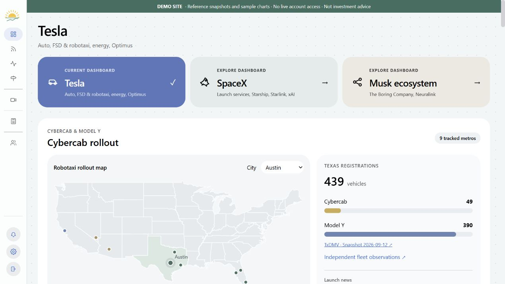

PUBLIC DEMO View screenshot ↗Brighter Finance
In progress · Mandalena LLCI build a finance research application that brings market data, news, and SEC filings into one place. My work includes React interfaces, relational data models, API integrations, and a fleet dashboard with city selection and keyboard-accessible markers.
React / Next.js / TypeScript / Supabase / PythonBehind the build
From scattered sources to a useful research workflow
The fleet interface presents dated source information so users can distinguish reported vehicle counts from live activity. I also built a maintenance planner that identifies pending work and produces review reports.